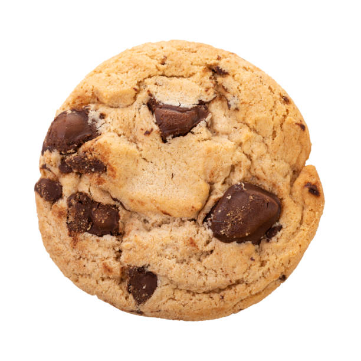

Seems like things are going pretty well so far
Let's add a recipe for some delicious chocolate chip cookies
We are going to borrow a nice picture from General Mill
Here is what the recipe calls for
Ingredients
- 2 1/4 cups Gold Medal™ all-purpose flour
- 1 teaspoon baking soda
- 1/2 teaspoon salt
- 1 cup butter, softened
- 3/4 cup granulated sugar
- 3/4 cup packed brown sugar
- 1 egg
- 1 teaspoon vanilla
- 2 cups semisweet chocolate chips
- 1 cup coarsely chopped nuts, if desire
Instructions
- Heat oven to 375°F. In small bowl, mix flour, baking soda and salt; set aside.
- In large bowl, beat softened butter and sugars with electric mixer on medium speed
- Or mix with spoon about 1 minute or until fluffy, scraping side of bowl occasionally.
- Beat in egg and vanilla until smooth. Stir in flour mixture just until blended (dough will be stiff).
- Stir in chocolate chips and nuts.
- Onto ungreased cookie sheets, drop dough by rounded tablespoonfuls 2 inches apart.
- Bake 8 to 10 minutes or until light brown (centers will be soft).Cool 2 minutes.
- Remove from cookie sheet to cooling rack. Cool completely, about 30 minutes.
- Store covered in airtight container.
- Enjoy!